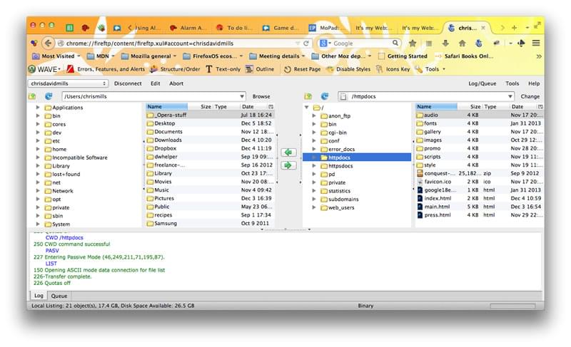

Getting started with the web is a concise series introducing you to the practicalities of web development. You'll set up the tools you need to construct a simple webpage and publish your own simple code.
Getting started with the web
The story of your first website
It's a lot of work to create a professional website, so if you're new to web development, we encourage you to start small. You won't build another Facebook right away, but it's not hard to make your own simple website online, so we'll start there.
Guides
working through the articles listed below, you will go from nothing to getting your first webpage online. Let's begin our journey!
When it comes to tools for building a website, there's a lot to pick from. If you're just starting, you might be confused by the array of code editors, frameworks, and testing tools out there. In this article, we will show you step-by-step how to install the software you need to begin some basic web development.
Before you start writing the code for your website, you should plan it first. What information are you showcasing? What fonts and colors are you using? Here we'll outline a simple method that you can follow to plan out your site's content and design.
A website consists of many files: text content, code, stylesheets, media content, and so on. When you're building a website, you need to assemble these files into a sensible structure and make sure they can talk to one another. This article explains how to set up a sensible file structure for your website and what issues you should be aware of.
HyperText Markup Language (HTML) is the code that you use to structure your web content and give it meaning and purpose. For example, is my content a set of paragraphs or a list of bullet points? Do I have images inserted on my page? Do I have a data table? Without overwhelming you, this article will provide enough information to make you familiar with HTML.
Cascading Style Sheets (CSS) is the code that you use to style your website. For example, do you want the text to be black or red? Where should content be drawn on the screen? What background images and colors should be used to decorate your website? In this article, we'll take you through what you need to get started.
JavaScript is the programming language that you use to add interactive features to your website. Some examples could be games, things that happen when buttons are pressed or data is entered in forms, dynamic styling effects, animation, and much more. In this article, we'll give you an idea of what is possible with this exciting language, and how to get started.
Once you have finished writing the code and organizing the files that make up your website, you need to put it all online so people can find it. This article describes how to get your simple sample code online with minimum effort.
When you access your favorite website, a lot of complicated things happen in the background that you may not know about. Here we will outline what happens when you view a webpage on your computer.
Installing basic software
In Installing basic software, we show you what tools you need to do simple web development and how to install them properly.
What tools do I actually need, right now?
In this article, we'll set you up with the bare minimum — a text editor and some modern web browsers.
Installing a text editor
You probably already have a basic text editor on your computer. By default Windows includes Notepad and macOS comes with TextEdit. Linux distros vary; Ubuntu comes with gedit by default.
For web development, you can probably do better than Notepad or TextEdit. We recommend starting with Visual Studio Code, which is a free editor, that offers live previews and code hints.
Installing modern web browsers
For now, we'll install a couple of desktop web browsers to test our code in. Choose your operating system below and click the relevant links to download installers for your favorite browsers:
Before going on, you should install at least two of these browsers and have them ready for testing.
Installing a local web server
Some examples will need to be run by a web server to work successfully. You can find out how to do this in How do you set up a local testing server?
What tools do the professionals use?
The following looks like a scary list, but fortunately, you can get started in web development without knowing anything about most of these.
A computer. Maybe that sounds obvious to some people, but some of you are reading this article on your phone or a library computer. For serious web development, it's better to invest in a desktop or laptop computer running Windows, macOS or Linux.
A text editor,to write code in. This could be a text editor (e.g. Visaul Studio Code, Notepad++ , Sublime , GNU Emacs, or VIM) Office document editors are not suitable for this use, as they rely on hidden elements that interfere with the rendering engines used by web browsers.
Web browsers, to test code in. Currently, the most-used browsers are Firefox , Chrome , Opera , Safari, Internet Explorer and Microsoft Edge You should also test how your site performs on mobile devices and on any old browsers your target audience may still be using (such as IE 8–10).Lynx a text-based terminal web browser, is great for seeing how your site is experienced by visually-impaired users.
A graphics editor, like GIMP, Figma, Paint.NET, Photoshop, Sketch or XD, to make images or graphics for your web pages
A version control system, to manage files on server, collabotate on a project with a team, share code and assets and aviod editing conflicts. Right now,Git is the most popular version control system along with the GitHub or Gitlab hosting service.
An FTP program, used on older web hosting accounts to manage files on servers (Git is increaseingly replacing FTP for this purpose). These are loads of (s) FTP programs available includeing Cyberduck, Fetchand FileZilla
An automation system, like Webpack, Grunt, orGulp to automatically perform repetive task, such as minifying code and running tests.
Libraries, frameworks, etc., to speed up writing common functionality. A library tends to be an existing JavaScript or CSS file that provides ready-rolled functionality for you to make use of in your code. A framework tends to take this idea further, offering a complete system with some custom syntaxes for you to write a web app on top of.
What will your website look like?
What will your website look like? discusses the planning and design work you have to do for your website before writing code, including "What information does my website offer?", "What fonts and colors do I want?", and "What does my site do?"
First things first: planning
Before doing anything, you need some ideas. What should your website actually do? A website can do basically anything, but, for your first try, you should keep things simple. We'll start by creating a simple webpage with a heading, an image, and a few paragraphs.
To begin, you'll need to answer these questions:
- What is your website about? Do you like dogs, New York, or Pac-Man?
- What information are you presenting on the subject? Write a little and a few paragraphs and think of an image you'd like to show on your page.
- What does you website look like, in simple high-level terms? What's the background color? What kind of font is appropriate: formal, cartoony, bold and loud, subtle.
Sketching out your design
Next, grab pen and paper and sketch out roughly how you want your site to look. For your first simple webpage, there's not much to sketch out, but you should get
in the habit of doing this now. It really helps — you don't have to be Van Gogh!

Noted: Even on real, complex websites, the design teams usually start out with rough sketches on paper and later on build digital mockups using a graphics editor or web technologies.Web teams often include both a graphic designer and a user experience (UX) designer. Graphic designers put together the visuals of the website. UX designers have a somewhat more abstract role in addressing how users will experience and interact with the website.
Choosing your assets
At this point, it's good to start putting together the content that will eventually appear on your webpage.
Text
You should still have your paragraphs and title from earlier. Keep these close by.
Themse color
To choose a color, go tothe Color Pickerand find a color you like. When you click on a color, you'll see a strange six-character code like #660066. That's called a hex code (short for hexadecimal), and represents your color. Copy the code down somewhere safe for now.

Font
To choose a font:
- Go to Google Fonts and find one you like.
- Copy the lines of code Google gives you into your text editor to save for later.
- For more details about using Google Fonts, see this page
Dealing with files
A website consists of many files: text content, code, stylesheets, media content, and so on. When you're building a website, you need to assemble these files into a sensible structure on your local computer, make sure they can talk to one another, and get all your content looking right before you eventually upload them to a server. Dealing with files discusses some issues you should be aware of so you can set up a sensible file structure for your website.
Where should your website live on your computer?
When you are working on a website locally on your computer, you should keep all the related files in a single folder that mirrors the published website's file structure on the server. This folder can live anywhere you like, but you should put it somewhere where you can easily find it, maybe on your Desktop, in your Home folder, or at the root of your hard drive.
An aside on casing and spacing
You'll notice that throughout this article, we ask you to name folders and files completely in lowercase with no spaces. This is because:
The short answer is that you should use a hyphen for your file names. The Google search engine treats a hyphen as a word separator but does not regard an underscore that way. For these reasons, it is best to get into the habit of writing your folder and file names lowercase with no spaces and with words separated by hyphens, at least until you know what you're doing. That way you'll bump into fewer problems later down the road.
What structure should your website have?
Next, let's look at what structure our test site should have. The most common things we'll have on any website project we create are an index HTML file and folders to contain images, style files, and script files. Let's create these now:
-
index.html: This file will generally contain your homepage content, that is, the text and images that people see when they first go to your site. Using your text editor, create a new file called index.html and save it just inside yourtest-site folder. -
images folder: This folder will contain all the images that you use on your site. Create a folder calledimages, inside yourtest-site folder. styles folder: This folder will contain the CSS code used to style your content (for example, setting text and background colors). Create a folder calledstyles, inside yourtest-site folder.-
scripts folder: This folder will contain all the JavaScript code used to add interactive functionality to your site (e.g. buttons that load data when clicked). Create a folder calledscripts, inside yourtest-site folder.
Noted:On Windows computers, you might have trouble seeing the file names, because Windows has an option called Hide extensions for known file typesturned on by default. Generally, you can turn this off by going to Windows Explorer, selecting the Folder options…option, unchecking the Hide extensions for known file types check box, then clicking OK. For more specific information covering your version of Windows, you can search on the web.
File paths
To make files talk to another, you have to provide a file path between them — basically a route, so one file knows where another one is. To demonstrate this, we will insert a little bit of HTML into our
index.htmlfile, and make it display the image you chose in the article "What will your website look like?"
Alternatively, you can choose an existing image at your disposal, on your computer or from the Web, and use it in the following steps:
- Copy the image you chose earlier into your
imagefolder. - Open up your
index.htmlfile, and insert the following code into the file exactly as shown. Don't worry about what it all means for now — we'll look at the structures in more detail later in the series. - The line
<img src="" alt="My test image"is the HTML code that inserts an imageinto the page. We need to tell the HTML where the image is. The image is inside the images directory, which is in the same directory asindex.html. To walk down the file structure from index.html to our image, the file path we'd need isimages/your-image-filename.For example, our image is calledfirefox-icon.png, so the path isimages/your-images-firefox-icon.png - Insert the file path into your HTML code between the double quote marks of the
src=""Code. - Change the contents of the
altaltribute to a description of the image your are including. In this case,alt="Firefox logo: flaming fox wrapping the world". - Save your HTML file, then load it in your web browser (double-click the file). You should see your new webpage display your image!
<!DOCTYPE html >
< html lang="en-US">
<head>
< title >My test page< title />
<head/>
<body>
<img src="" alt="My test image"/>
<body/>
<html/>

Some general rules for file paths:
my-image.jpg
subdirectory/my-image.jpg
index.html
was inside test-site, you could reference my-image.jpg from index.htmlusing ../my-image.jpg.
../subdirectory/another-subdirectory/my-image.jpg.For now, this is about all you need to know.
Note: The Windows file sytem tends to use backslashe, not forward slashes, e.g. C:\Windows. This doesn't matter in HTML__
even if you are developing your website on Windows, you should still use forward slashes in your code.
What else should be done?
That is about it for now. Your folder structure should look something like this:

HTML basics
HTML (HyperText Markup Language) is the code that is used to structure a web page and its content. For example, content could be structured within a set of paragraphs, a list of bulleted points, or using images and data tables. As the title suggests, this article will give you a basic understanding of HTML and its functions.
So what is HTML?
HTML is a markup language that defines the structure of your content. HTML consists of a series of elements, which you use to enclose, or wrap, different parts of the content to make it appear a certain way, or act a certain way. The enclosing tags can make a word or image hyperlink to somewhere else, can italicize words, can make the font bigger or smaller, and so on. For example, take the following line of content:
My cat is very grumpy
If we wanted the line to stand by itself, we could specify that it is a paragraph by enclosing it in paragraph tags:
<p>My cat is very grumpy</p>
Anatomy of an HTML element
Let's explorer this paragraph element a bit further

The main parts of our element are as follows:
- The opening tag: This consists of the name of the element (in this case, p), wrapped in opening and closing angle brackets. This states where the element begins or starts to take effect — in this case where the paragraph begins.
- The closing tag: This is the same as the opening tag, except that it includes a forward slash before the element name. This states where the element ends — in this case where the paragraph ends. Failing to add a closing tag is one of the standard beginner errors and can lead to strange results.
- The content: This is the content of the element, which in this case, is just text.
- The element: The opening tag, the closing tag, and the content together comprise the element.
Elements can also have attributes that look like the following:

Attributes contain extra information about the element that you don't want to appear in the actual content. Here, class is the attribute name and editor-note is the attribute value. The class attribute allows you to give the element a non-unique identifier that can be used to target it (and any other elements with the same class value) with style information and other things.
An attribute should always have the following:
- A space between it and the element name (or the previous attribute, if the element already has one or more attributes).
- The attribute name followed by an equal sign.
- The attribute value wrapped by opening and closing quotation marks.
Note: Simple attribute values that don't contain ASCII whitespace (or any of the characters " ' ` = < >) can remain unquoted, but it is recommended that you quote all attribute values, as it makes the code more consistent and understandable.
Nesting elements
You can put elements inside other elements too — this is called nesting. If we wanted to state that our cat is very grumpy, we could wrap the word "very" in a element, which means that the word is to be strongly emphasized
<p>My cat is <strong> very</strong> grumpy.</p>
CSS basics
CSS (Cascading Style Sheets) is the code that styles web content. CSS basics walks through what you need to get started. We'll answer questions like: How do I make text red? How do I make content display at a certain location in the (webpage) layout? How do I decorate my webpage with background images and colors?
What is CSS?
Like HTML, CSS is not a programming language. It's not a markup language either. CSS is a style sheet language. CSS is what you use to selectively style HTML elements. For example, this CSS selects paragraph text, setting the color to red:
p {
color: red;
}
Let's try it out! Using a text editor, paste the three lines of CSS (above) into a new file. Save the file as style.css in a directory named styles.
To make the code work, we still need to apply this CSS (above) to your HTML document. Otherwise, the styling won't change the appearance of the HTML. (If you haven't been following our project, pause here to read Dealing with files and HTML basics.)
- Open your index.html file. Paste the following line in the head (between the and tags):
- Save index.html and load it in your browser. You should see something like this:
<link href="styles/style.css" rel="stylesheet"/>

If your paragraph text is red, congratulations! Your CSS is working.
Anatomy of a CSS ruleset
Let's dissect the CSS code for red paragraph text to understand how it works:

he whole structure is called a ruleset. (The term ruleset is often referred to as just rule.) Note the names of the individual parts:
Selector
This is the HTML element name at the start of the ruleset. It defines the element(s) to be styled (in this example,
elements). To style a different element, change the selector.
Declaration
This is a single rule like color: red;. It specifies which of the element's properties you want to style.
Properties
These are ways in which you can style an HTML element. (In this example, color is a property of the
elements.) In CSS, you choose which properties you want to affect in the rule.
Property value
To the right of the property—after the colon—there is the property value. This chooses one out of many possible appearances for a given property. (For example, there are many color values in addition to red.)
Note the other important parts of the syntax:
To modify multiple property values in one ruleset, write them separated by semicolons, like this:
p {
color: red;
width: 500px;
border: 1px solid black;
}
Selecting multiple elements
You can also select multiple elements and apply a single ruleset to all of them. Separate multiple selectors by commas. For example:
p,
li,
h1 {
color: red;
}
Different types of selectors
There are many different types of selectors. The examples above use element selectors, which select all elements of a given type. But we can make more specific selections as well. Here are some of the more common types of selectors:
| Selector name | What does it select | Example |
|---|---|---|
| Element selector (sometimes called a tag or type selector) | All HTML elements of the specified type. | p selects <p> |
| ID selector | The element on the page with the specified ID. On a given HTML page, each id value should be unique. | #my-id select <p id=""my-id"> or <a id=""my-id"> |
| Class selector | The element(s) on the page with the specified class. Multiple instances of the same class can appear on a page. | .my-class selects <p class=""my-class"> or <a class""my-class"> |
| Attribute selector | The element(s) on the page with the specified attribute. | img [src] selects <img src="myimage.png"> but not <img> |
There are many more selectors to discover. To learn more, see the MDN Selector guides
JavaScript basics
JavaScript is a programming language that adds interactivity to your website. This happens in games, in the behavior of responses when buttons are pressed or with data entry on forms; with dynamic styling; with animation, etc. This article helps you get started with JavaScript and furthers your understanding of what is possible.
What is JavaScript?
JavaScript is a powerful programming language that can add interactivity to a website. It was invented by Brendan Eich.
JavaScript is versatile and beginner-friendly. With more experience, you'll be able to create games, animated 2D and 3D graphics, comprehensive database-driven apps, and much more!
JavaScript itself is relatively compact, yet very flexible. Developers have written a variety of tools on top of the core JavaScript language, unlocking a vast amount of functionality with minimum effort. These include:
It's outside the scope of this article—as a light introduction to JavaScript—to present the details of how the core JavaScript language is different from the tools listed above. You can learn more in MDN's JavaScript learning area, as well as in other parts of MDN.
The section below introduces some aspects of the core language and offers an opportunity to play with a few browser API features too. Have fun!
A "Hello world!" example
JavaScript is one of the most popular modern web technologies! As your JavaScript skills grow, your websites will enter a new dimension of power and creativity.
However, getting comfortable with JavaScript is more challenging than getting comfortable with HTML and CSS. You may have to start small, and progress gradually. To begin, let's examine how to add JavaScript to your page for creating a Hello world! example. (Hello world! is the standard for introductory programming examples.)
- Go to your test site and create a new folder named scripts. Within the scripts folder, create a new text
document called
main.js, and save it. - In your
index.htmlfile, enter this code on a new line, just before the closing </body> tag: - This is doing the same job as the element for CSS. It applies the JavaScript to the page, so it can have an effect on the HTML (along with the CSS, and anything else on the page).
- Add this code to the
main.jsfile: - Make sure the HTML and JavaScript files are saved. Then load
index.htmlin your browser. You should see something like this:
<script src="scripts/main.js"></script>
const myHeading = document.querySelector("h1");
myHeading.textContent = "Hello world!;"

What happened?
The heading text changed to Hello world! using JavaScript. You did this by using a function called querySelector() to grab a reference to your heading, and then store it in a variable called myHeading. This is similar to what we did using CSS selectors. When you want to do something to an element, you need to select it first.
Following that, the code set the value of the myHeading variable's textContent property (which represents the content of the heading) to Hello world!.
Note: Both of the features you used in this exercise are parts of the Document Object Model (DOM) API, which has the capability to manipulate documents.
Language basics crash course
To give you a better understanding of how JavaScript works, let's explain some of the core features of the language. It's worth noting that these features are common to all programming languages. If you master these fundamentals, you have a head start on coding in other languages too!
Variables
Variables are containers that store values. You start by declaring a variable with the let keyword, followed by the name you give to the variable:
let myVariable;
JavaScript is case sensitive. This means myVariable is not the same as myvariable. If you have problems in your code,
check the case!
After declaring a variable, you can give it a value:
myVariable = "Bob";
Also, you can do both these operations on the same line:
let myVariable = "Bob";
You retrieve the value by calling the variable name:
myVariable;
After assigning a value to a variable, you can change it later in the code:
let myVariable = "Bob";
myVariable = "Steve";
Note that variables may hold values that have different data types:
| Variable | Explaination | Example |
|---|---|---|
| String | This is a sequence of text known as a string. To signify that the value is a string, enclose it in single quote marks. | let myVariable = 'Bob'; |
| Number | This is a number. Numbers don't have quotes around them. | let myVariable = 10; |
| Boolean | This is a True/False value. The words true and false are special keywords that don't need quote marks. | let myVariable = true; |
| Array | This is a structure that allows you to store multiple values in a single reference. | let myVariable = [1, 'Bob', 'Steve', 10]; Refer to each member of the array like this: myVariable[0], myVariable[1], etc. |
| Object | This can be anything. Everything in JavaScript is an object and can be stored in a variable. Keep this in mind as you learn. | let myVariable = document.querySelector('h1'); All of the above example too. |
So why do we need variables? Variables are necessary to do anything interesting in programming. If values couldn't change, then you couldn't do anything dynamic, like personalize a greeting message or change an image displayed in an image gallery.
Comments
Comments are snippets of text that can be added along with code. The browser ignores text marked as comments. You can write comments in JavaScript just as you can in CSS:
/*
Everything in between is a comment.
*/
If your comment contains no line breaks, it's an option to put it behind two slashes like this:
// This is a comment
Operators
An operator is a mathematical symbol that produces a result based on two values (or variables). In the following table, you can see some of the simplest operators, along with some examples to try in the JavaScript console.
| Operator | Explanation | Symbol(s) | Example |
|---|---|---|---|
| Addition | Add two numbers together or combine two strings. | + |
6 + 9; |
| Subtraction, Multiplication, Division | These do what you'd expect them to do in basic math. | -, *, / |
0 -3; |
| Assignment | As you've seen already: this assigns a value to a variable. | = |
let myVariable = 'Bob'; |
| Strict equality | This performs a test to see if two values are equal. It returns a true/false (Boolean) result. |
=== |
let myVariable = 3; |
| Not, Does-not-equal | This returns the logically opposite value of what it precedes. It turns a true into a false,
etc.. When it is used alongside the Equality operator, the negation operator tests whether
two values are not equal. |
!, !== |
For "Not", the basic expression is true, but the comparison returns false because we negate it: let myVariable = 3; "Does-not-equal" gives basically the same result with different syntax. Here we are testing "is
myVariable NOT equal to 3". This returns false because myVariable IS equal to 3:
let myVariable = 3;
|
There are a lot more operators to explore, but this is enough for now. See Expressions and operators for a complete list.
Note: Mixing data types can lead to some strange results when performing calculations. Be careful that you are referring to your variables correctly, and getting the results you expect. For example, enter '35' + '25' into your console. Why don't you get the result you expected? Because the quote marks turn the numbers into strings, so you've ended up concatenating strings rather than adding numbers. If you enter 35 + 25 you'll get the total of the two numbers.
Conditionals
Conditionals are code structures used to test if an expression returns true or not. A very common form of
conditionals is the if...else statement. For example:
let iceCream = "chocolate";
if (iceCream === "chocolate") {
alert("Yay, I love chocolate ice cream!");
} else {
alert("Awwww, but chocolate is my favorite…");
}
The expression inside the if () is the test. This uses the strict equality operator (as described above) to compare
the variable iceCream with the string chocolate to see if the two are equal. If this comparison returns true, the
first block of code runs. If the comparison is not true, the second block of code—after the else statement—runs
instead.
Function
Functions are a way of packaging functionality that you wish to reuse. It's possible to define a body of code as a function that executes when you call the function name in your code. This is a good alternative to repeatedly writing the same code. You have already seen some uses of functions. For example:
let myVariable = document.querySelector("h1");
alert("hello!");
These functions, document.querySelector and alert, are built into the browser.
If you see something which looks like a variable name, but it's followed by parentheses— () —it is likely a function. Functions often take arguments: bits of data they need to do their job. Arguments go inside the parentheses, separated by commas if there is more than one argument.
For example, the alert() function makes a pop-up box appear inside the browser window, but we need to give it a string as an argument to tell the function what message to display.
You can also define your own functions. In the next example, we create a simple function which takes two numbers as arguments and multiplies them:
function multiply(num1, num2) {
let result = num1 * num2;
return result;
}
Try running this in the console; then test with several arguments. For example:
multiply(4, 7);
multiply(20, 20);
multiply(0.5, 3);
Note: The return statement tells the browser to return the result variable out of the function so it is available to use. This is necessary because variables defined inside functions are only available inside those functions. This is called variable scoping. (Read more about variable scoping.)
Events
Real interactivity on a website requires event handlers. These are code structures that listen for activity in the browser, and run code in response. The most obvious example is handling the click event, which is fired by the browser when you click on something with your mouse. To demonstrate this, enter the following into your console, then click on the current webpage
document.querySelector("html").addEventListener("click", function () {
alert("Ouch! Stop poking me!");
});
There are a number of ways to attach an event handler to an element. Here we select the <html > element. We then
call its addEventListener() function, passing in the name of the event to listen to ( 'click' ) and a function to run when the event happens.
The function we just passed to addEventListener() here is called an anonymous function, because it doesn't have a name. There's an alternative way of writing anonymous functions, which we call an arrow function. An arrow function uses () => instead of function ():
document.querySelector("html").addEventListener("click", () => {
alert("Ouch! Stop poking me!");
});
Supercharging our example website
With this review of JavaScript basics completed (above), let's add some new features to our example site.
Before going any further, delete the current contents of your main.js file — the bit you added earlier during the
"Hello world!" example — and save the empty file. If you don't, the existing code will clash with the new code you are about to add.
Adding an image changer
In this section, you will learn how to use JavaScript and DOM API features to alternate the display of one of two images. This change will happen as a user clicks the displayed image.
- Choose an image you want to feature on your example site. Ideally, the image will be the same size as the image you added previously, or as close as possible.
- Save this image in your
imagesfolder. - Rename the image firefox2.png.
- Add the following JavaScript code to your
main.jsfile - Save all files and load index.html in the browser. Now when you click the image, it should change to the other one.
const myImage = document.querySelector("img");
myImage.onclick = () => {
const mySrc = myImage.getAttribute("src");
if (mySrc === "images/firefox-icon.png") {
myImage.setAttribute("src", "images/firefox2.png");
} else {
myImage.setAttribute("src", "images/firefox-icon.png");
}
};
This is what happened. You stored a reference to your <img> element in the myImage variable. Next, you made this
variable's onclick event handler property equal to a function with no name (an "anonymous" function). So every
time this element is clicked:
- The code retrieves the value of the image's
srcattribute. - The code uses a conditional to check if the
srcvalue is equal to the path of the original image:- If it is, the code changes the src value to the path of the second image, forcing the other image to be loaded inside the element.
- If it isn't (meaning it must already have changed), the
srcvalue swaps back to the original image path, to the original state.
Adding a personalized welcome message
Next, let's change the page title to a personalized welcome message when the user first visits the site. This welcome message will persist. Should the user leave the site and return later, we will save the message using the Web Storage API. We will also include an option to change the user, and therefore, the welcome message.
- In index.html, add the following line just before the <script> element
- In
main.js, place the following code at the bottom of the file, exactly as it is written. This takes references to the new button and the heading, storing each inside variables: - Add the following function to set the personalized greeting. This won't do anything yet, but this will change soon.
- Add the following condition block. We could call this initialization code, as it structures the app when it first loads.
- Put this onclick event handler (below) on the button. When clicked, setUserName() runs. This allows the user to enter a different name by pressing the button.
<button> Change user <button>
let myButton = document.querySelector("button");
let myHeading = document.querySelector("h1");
function setUserName() {
const myName = prompt("Please enter your name.");
localStorage.setItem("name", myName);
myHeading.textContent = `Mozilla is cool, ${myName}`;
}
The setUserName() function contains a prompt() function, which displays a dialog box, similar to alert(). This prompt() function does more than alert(), asking the user to enter data, and storing it in a variable after the user clicks OK. In this case, we are asking the user to enter a name. Next, the code calls on an API localStorage, which allows us to store data in the browser and retrieve it later. We use localStorage's setItem() function to create and store a data item called 'name', setting its value to the myName variable which contains the user's entry for the name. Finally, we set the textContent of the heading to a string, plus the user's newly stored name.
if (!localStorage.getItem("name")) {
setUserName();
} else {
const storedName = localStorage.getItem("name");
myHeading.textContent = `Mozilla is cool, ${storedName}`;
}
This first line of this block uses the negation operator (logical NOT, represented by the !) to check whether the name data exists. If not, the setUserName() function runs to create it. If it exists (that is, the user set a user name during a previous visit), we retrieve the stored name using getItem() and set the textContent of the heading to a string, plus the user's name, as we did inside setUserName().
myButton.onclick = () => {
setUserName();
};
A user name of null?
When you run the example and get the dialog box that prompts you to enter your user name, try pressing the Cancel button. You should end up with a title that reads Mozilla is cool, null. This happens because—when you cancel the prompt—the value is set as null. Null is a special value in JavaScript that refers to the absence of a value.
Also, try clicking OK without entering a name. You should end up with a title that reads Mozilla is cool, for fairly obvious reasons.
To avoid these problems, you could check that the user hasn't entered a blank name. Update your setUserName() function to this:
function setUserName() {
const myName = prompt("Please enter your name.");
if (!myName) {
setUserName();
} else {
localStorage.setItem("name", myName);
myHeading.textContent = `Mozilla is cool, ${myName}`;
}
}
In human language, this means: If myName has no value, run setUserName() again from the start. If it does have a value (if the above statement is not true), then store the value in localStorage and set it as the heading's text.
Conclusion
if you have followed all the instructions in this article, you should end up with a page that looks something like the image below. You can also view our version

We have just scratched the surface of JavaScript. If you enjoyed playing, and wish to go further, take advantage of the resources listed below.
Publishing your website
Once you finish writing the code and organizing the files that make up your website, you need to put it all online so people can find it. This article explains how to get your simple sample code online with little effort.
What are the options?
Publishing a website is a complex topic because there are many ways to go about it. This article doesn't attempt to document all the possible methods. Instead, it explains the advantages and disadvantages of three approaches that are practical for beginners. Then it steps through one method that can work right away for many readers.
Getting hosting and a domain name
To have more control over content and website appearance, most people choose to buy web hosting and a domain name:
http://www.mozilla.org or http://www.bbc.co.uk.
You can rent your domain name for as many years as you want from a domain registrar.Many professional websites go online this way.
In addition, you will need a File Transfer Protocol (FTP) program (see How much does it cost: software for more details) to actually transfer the website files over to the server. FTP programs vary widely, but generally, you have to connect to your web server using details provided by your hosting company (typically username, password, hostname). Then the program shows you your local files and the web server's files in two windows, and provides a way for you to transfer files back and forth.
Tips for finding hosting and domains
Using an online tool like GitHub or Google App Engine
Some tools let you publish your website online:
These options are usually free, but you may outgrow the limited feature-set.
Using a web-based IDE such as CodePen
There are a number of web apps that emulate a website development environment, allowing you to enter HTML, CSS and JavaScript, and then display the result of that code as a website — all in one browser tab. Generally speaking, these tools are relatively easy, great for learning, good for sharing code (for example, if you want to share a technique with or ask for debugging help from colleagues in a different office), and free (for basic features). They host your rendered page at a unique web address. However, the features are limited, and these apps usually don't provide hosting space for assets (like images).
Try playing with some of these examples to find out which one works best for you:
Publishing via GitHub
Now let's examine how to easily publish your site via GitHub Pages.

Note: Make sure your folder has an index.html file.
Note: It may take a few minutes for your website to go live. If your website does not display immediately, wait a few minutes. Try again.
How the web works
How the web works provides a simplified view of what happens when you view a webpage in a web browser on your computer or phone.
This theory is not essential to writing web code in the short term, but before long you'll really start to benefit from understanding what's happening in the background.
Clients and servers
Computers connected to the internet are called clients and servers. A simplified diagram of how they interact might look like this:

The other parts of the toolbox
The client and server we've described above don't tell the whole story. There are many other parts involved, and we'll describe them below.
For now, let's imagine that the web is a road. On one end of the road is the client, which is like your house. On the other end of the road is the server, which is a shop you want to buy something from.

In addition to the client and the server, we also need to say hello to:
- Code files: Websites are built primarily from HTML, CSS, and JavaScript, though you'll meet other technologies a bit later.
- Assets: This is a collective name for all the other stuff that makes up a website, such as images, music, video, Word documents, and PDFs.
So what happens, exactly?
When you type a web address into your browser (for our analogy that's like walking to the shop):
- The browser goes to the DNS server, and finds the real address of the server that the website lives on (you find the address of the shop).
- The browser sends an HTTP request message to the server, asking it to send a copy of the website to the client (you go to the shop and order your goods). This message, and all other data sent between the client and the server, is sent across your internet connection using TCP/IP.
- If the server approves the client's request, the server sends the client a "200 OK" message, which means "Of course you can look at that website! Here it is", and then starts sending the website's files to the browser as a series of small chunks called data packets (the shop gives you your goods, and you bring them back to your house).
- The browser assembles the small chunks into a complete web page and displays it to you (the goods arrive at your door — new shiny stuff, awesome!).
Order in which component files are parsed
When browsers send requests to servers for HTML files, those HTML files often contain <link> elements referencing external CSS stylesheets and <script> elements referencing external JavaScript scripts. It's important to know the order in which those files are parsed by the browser as the browser loads the page:
DNS explained
Real web addresses aren't the nice, memorable strings you type into your address bar to find your favorite websites.
They are special numbers that look like this: 63.245.215.20.
This is called an IP address, and it represents a unique location on the web. However, it's not very easy to remember, is it? That's why Domain Name Servers were invented. These are special servers that match up a web address you type into your browser (like "mozilla.org") to the website's real (IP) address.
Websites can be reached directly via their IP addresses. You can use a DNS lookup tool to find the IP address of a website.
Packets explained
Earlier we used the term "packets" to describe the format in which the data is sent from server to client. What do we mean here? Basically, when data is sent across the web, it is sent in thousands of small chunks. There are multiple reasons why data is sent in small packets. They are sometimes dropped or corrupted, and it's easier to replace small chunks when this happens. Additionally, the packets can be routed along different paths, making the exchange faster and allowing many different users to download the same website at the same time. If each website was sent as a single big chunk, only one user could download it at a time, which obviously would make the web very inefficient and not much fun to use.